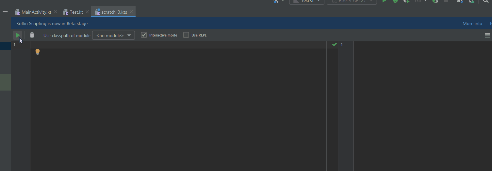
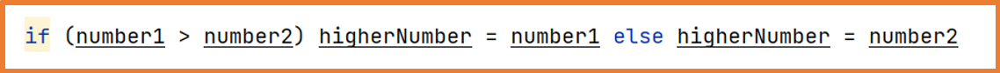
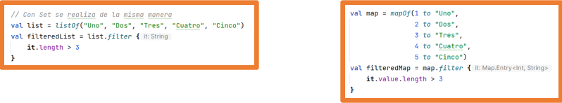
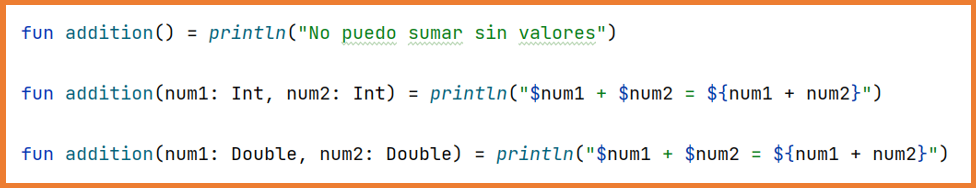

Inicialmente, Java fue el lenguaje de programación para Android,
pero en 2017 Google designó Kotlin como
lenguaje oficial para Android, equiparándolo con Java.
Tiene soporte oficial de Google y está integrado en Android Studio.
Lenguaje multiplataforma y multipropósito compilado sobre la JVM, por lo que es totalmente compatible
con Java y sus librerías (llamadas de Java a Kotlin y viceversa).
Lenguaje orientado a objetos (POO)
Es un lenguaje conciso que evita código innecesario (hasta un 40% menos).
Tiene seguridad de nulos (Null Safety), gestionando los nulos de forma segura y evitando
errores NullPointerException.
De forma no oficial, se puede decir que es como Java pero con el estilo (y ventajas) de Python.
En este curso, Kotlin se utilizará como lenguaje de programación para Android.
Dado que Kotlin es un lenguaje multipropósito, puede usarse para desarrollar aplicaciones Android, de escritorio, web o de consola.
En esta unidad trataremos los fundamentos y la sintaxis de Kotlin,
para posteriormente usar el lenguaje dentro de Android Studio y desarrollar aplicaciones móviles Android.
Si quieres crear y probar scripts de Kotlin, debes tener instalado un JDK de Java.
Podríamos usar IntelliJ IDEA de JetBrains,
que es el IDE en el que se basa Android Studio.
No obstante, como ya tenemos Android Studio instalado, será la herramienta que usemos para desarrollar aplicaciones Android y probar código Kotlin.
Para ello, tenemos varias opciones:
Podemos iniciar un proyecto nuevo (o reutilizar uno anterior, aunque podría ensuciar la estructura de archivos y no es buena práctica) y crear un archivo Kotlin, por ejemplo
Test.kt, y añadir la función main para nuestras pruebas.
Ten en cuenta que el archivo Kotlin tiene la extensión .kt.
Archivo de prueba
Veamos un ejemplo sencillo de entrada y salida:
fun main(){
val variable:String
variable = readln()
println("Has escrito $variable")
}
Tras ejecutarlo, espera a que escribamos algo y pulsemos Intro, y después lo muestra por pantalla.
Entrada/Salida Entrada y salida
println() -> Escribe en la salida estándar readln() -> Lee de la entrada estándar (teclado)
Otra opción sería, igualmente dentro de un proyecto (en nuestro caso el hola mundo inicial).
Haciendo clic derecho sobre nuestro paquete, podemos crear un nuevo Scratch file.
Seleccionamos el lenguaje de programación que queramos, en este caso Kotlin.
Veamos un ejemplo:
En este caso usamos la función println(), y como vemos a la derecha, nos muestra la salida por pantalla.
Si creamos una variable, indica su tipo, y si mostramos la variable, muestra el valor de la variable en ese momento.
Ten en cuenta que un scratch file se ejecuta de arriba a abajo, como se observa.

Guía de estilo de Kotlin
En cualquier lenguaje de programación, es importante que el código sea legible.
Las plataformas oficiales suelen proporcionar guías de estilo para que los desarrolladores las sigan,
y es recomendable revisarlas para escribir código correcto.
También puedes usar la opción Code -> Reformat Code (Ctrl+Alt+L) en el IDE, para que el código se formatee según las guías de estilo
(siempre que la configuración del IDE no se haya modificado).
Saludos en Kotlin
Como se mencionó, los archivos Kotlin tienen la extensión .kt y, a diferencia de Java,
no es necesario que todo esté dentro de clases.
Las funciones pueden existir fuera de clases; en concreto, la función principal main no necesita estar dentro de una clase.
La función main puede aceptar argumentos, pero no es obligatorio. Tampoco es necesario declarar la visibilidad de la función (public/static).
La función println() está disponible sin necesidad de usar System.out de Java, y
readln() captura la entrada del usuario desde la consola como cadena.
El punto y coma al final de cada sentencia es opcional, pero por convención no debe usarse.
Los comentarios, tanto de línea como de bloque, son iguales que en Java: // y /* */.
Paquete e imports
Como en Java, el paquete al que pertenece el archivo y los imports deben colocarse en la parte superior del archivo.
Tipos de datos en Kotlin
Tipos numéricos
Se indican con las palabras reservadas Int, Float, Long, Short, Byte y Double.
Decimales: Double (64 bits), Float (32 bits)
Enteros: Long (64 bits), Int (32 bits),
Short (16 bits), Byte (8 bits)
Kotlin permite usar el carácter guion bajo (underscore, _) en literales numéricos para mejorar la legibilidad.
Ejemplos de literales:
2_000_000
44_294_051
6135_8442_0103_5610L
Caracteres
Indicados con la palabra reservada Char.
Se usa codificación UTF-16, por lo que los literales pueden indicarse con el carácter o su representación UNICODE entre comillas simples.
Ejemplos de literales:
'N' -> '\u004E'
'7' -> '\u0037'
No pueden tratarse como números.
Existen una serie de caracteres de escape:
\t Tabulador
\b Retroceso
\r Retorno de carro
\n Nueva línea
\' Apóstrofe
\" Comillas dobles
\\ Barra invertida
\$ Signo dólar
\u+XXXX Símbolo Unicode (4 dígitos hexadecimales)
Booleanos
Indicados con la palabra reservada Boolean.
Los valores posibles son true y false, y sus literales:
true
false
Cadenas (Strings)
Indicadas con la palabra reservada String.
Los literales de cadena se indican con comillas dobles:
"¡Hola!"
"Rick Sanchez"
Con tres comillas dobles, la cadena puede incluir saltos de línea; se conocen como raw strings, donde se incluyen todos los caracteres entre comillas.
"""Este es un texto
que ocupa varias líneas
o se muestra en múltiples
líneas"""
Se pueden eliminar espacios iniciales y finales, así como márgenes izquierdos.
"""|Este es un texto
|que ocupa varias líneas
|o se muestra en múltiples
|líneas""".trimMargin()
Por defecto, el carácter | es el delimitador de margen, pero puede cambiarse: trimMargin(">").
Los templates de cadena permiten integrar variables en cadenas usando el símbolo $ seguido del nombre de la variable. Kotlin lo sustituirá por el valor almacenado.
Si la variable es un objeto o quieres operar con ella, debes encerrarla entre llaves { }.
"El descuento es $discount %"
"El precio es ${product.price} €"
""" |Cuaderno $notebookPrice €
|Bolígrafo azul $penPrice €
| Total: ${notebookPrice + penPrice}
""".trimMargin()
Se recomienda usar siempre templates de cadena y raw strings.
Aunque se pueden concatenar cadenas con el carácter +, debe evitarse.
Además, también debe evitarse usar múltiples println seguidos.
Arrays
Los arrays son estructuras de datos de longitud fija que permiten almacenar múltiples valores del mismo tipo (números, caracteres, cadenas, booleanos, objetos).
1 2 3 4 5
"Rick", "Morty", "Summer"
Los veremos en detalle más adelante.
Declaración de variables
Con la palabra reservada var se declaran variables.
Las variables son como cajas que almacenan valores, y estos valores pueden cambiar durante la ejecución del programa.
Kotlin es un lenguaje de tipado estático, lo que significa que una vez que una variable es de un tipo, ese tipo no puede cambiar (similar a Java).
Al declarar una variable, puedes especificar el tipo de dato o no.
Si no se especifica, Kotlin inferirá el tipo a partir del valor asignado.
Al declarar una variable, debe cumplirse una de estas dos opciones:
Especificar el tipo de dato a almacenar.
Especificar el valor a almacenar (Kotlin inferirá el tipo).
También puedes declarar una variable especificando tanto el tipo de dato como el valor a almacenar.
Declaración de variables de tipo simple
var name: String = "Rick Sanchez"
var dimension = "c-137" // se infiere el tipo de dato
var gender: Char = 'h'
var age: Int
age = 70
var isAlive: Boolean = true
Declaración de arrays
Los arrays son objetos y se crean con la clase Array, que proporciona los métodos get y set,
pero por comodidad también pueden usarse los corchetes [ ].
// Se especifica el tipo de dato del array
var numbers: Array = arrayOf(1, 2, 3, 4, 5)
// Se infiere el tipo de dato del array
var names = arrayOf("Rick", "Morty", "Summer")
println(numbers[1]) // numbers.get(1)
numbers[3] = 12 // numbers.set(3, 12)
println("Hay ${names.size} nombres")
Puedes usar el constructor de la clase Array para indicar el tamaño e incluso una función lambda para rellenar los elementos.
var array = Array(size = 10) { } // array de 10 elementos vacíos (Unit)
var zeros = Array(size = 5) { 0 } // array de 5 enteros, todos 0
var emptys = Array(size = 5) { "" } // array de 5 cadenas, todas ""
var serie = Array(size = 100) { it } // array de 100 enteros: 0, 1, 2, ... 99
var reverse = Array(size = 50) { 50 - it } // array de 50 enteros: 50, 49, 48, ... 0
El código entre llaves es una función lambda (anónima), que se explicará más adelante.
En esa lambda, la variable it representa el número de iteración, empezando en cero.
Como Android Studio tiene sugerencias de código activadas por defecto, si dejas un salto de línea entre llaves verás esta información.
Creando un array con los 10 primeros números pares.
val a = Array(10){
it*2
}
for(b in a) print("$b ")
Declaración de arrays multidimensionales
Los arrays multidimensionales son arrays cuyos elementos a su vez son arrays.
El caso más común son las matrices, que pueden representarse como una tabla.
Hay varias formas de declarar un array multidimensional en Kotlin:
El acceso a los elementos de una matriz se realiza usando los índices de fila y columna.
val matrix = arrayOf(
arrayOf(5, 3, 2, 0),
arrayOf(4, 9, 4, 5),
arrayOf(8, 1, 7, 6)
)
matrix[1][3] = 8 // Establece el valor en la fila 1, columna 3 a 8
for (row in matrix) {
for (column in row) {
print("$column ") // Imprime cada elemento seguido de un espacio
}
println() // Salta de línea tras imprimir una fila
}
El tipo Any
Todos los tipos de variable son clases y, en la jerarquía de Kotlin, tienen una superclase denominada Any (similar a Object en Java).
Puedes declarar una variable con tipo Any y luego asignarle cualquier tipo de dato. Puede ser útil en ciertos casos, como se verá más adelante.
var number: Any = 6
var name: Any = "Rick Sanchez"
var isAlive: Any = true
var numbers = arrayOf(1, 2, 3)
Para usar una variable, debe almacenar un valor.
Existe un tipo de dato que permite dejar una variable “vacía”, conocido como Unit (similar a void en Java).
val variable1: Any
// Produce error porque la variable no ha sido inicializada
println("valor variable: $variable1")
val variable2: Any = Unit
// Funciona correctamente
println("valor variable: $variable2")
Ámbito (scope) de las variables
El ámbito de una variable es el área donde puede usarse.
Por lo general, una variable puede utilizarse dentro de todo el bloque de código donde se declara, el cual está delimitado por llaves { }.
Una variable puede usarse dentro de todo el bloque, incluyendo otros bloques en su interior.
Si una variable se declara fuera de un bloque { }, puede utilizarse en todos los archivos del proyecto.
Conversión de tipos
Si quieres realizar una conversión de tipo, debes usar un método de la clase correspondiente al tipo al que quieras convertir.
Por ejemplo, para convertir un Double a Int, debes usar el método toInt de la clase Double sobre la variable decimal.
Esto truncará el valor, es decir, se perderá la parte decimal.
var decimalNumber: Double = 12.34
var intNumber: Int
intNumber = decimalNumber.toInt()
Los métodos de conversión suelen empezar por “to”:
Cuando se lee un valor por teclado, siempre se trata como cadena, por lo que si se pide un número, debe convertirse a entero o decimal según convenga:
var number = readln().toInt()
Declaración de constantes
La palabra reservada val se utiliza para declarar constantes.
Su uso es similar a las variables declaradas con var, salvo que, una vez asignado un valor, no puede cambiar durante la ejecución del programa.
Sin embargo, las constantes pueden asignarse durante la ejecución del programa, por ejemplo, tras pedir un valor al usuario.
Justo después de definirla, debes inicializarla en la misma línea.
Los arrays y todos los objetos pueden declararse como val y posteriormente cambiar sus valores.
Esto es porque son objetos, y con val la referencia almacenada no puede cambiar, pero sí los valores internos del objeto.
val numbers = arrayOf(1, 2, 3, 4, 0)
// Se puede cambiar el contenido de los elementos
numbers[4] = 5
// Al estar declarado como val, no puede reasignarse el objeto
numbers = arrayOf(1, 2) // Producirá error
Puedes usar la palabra reservada const antes de la declaración de val para definir constantes con valores conocidos.
Estas constantes no pueden asignarse durante la ejecución del programa, por lo que deben definirse fuera de las funciones.
Como en Java, para variables que puedan almacenar null, puede hacerse una comprobación previa antes de intentar acceder a ellas.
var nullableName: String? = "Morty Smith"
if (nullableName != null) {
println("¡Hola $nullableName!")
} else {
println("¡Hola invitado!")
}
El operador ? también permite hacer estas comprobaciones de forma más sencilla, reduciendo código.
var nullableName: String? = "Morty Smith"
println("${nullableName?.length}")
Este operador permite realizar comprobaciones encadenadas.
Operador Elvis ?:
El operador Elvis ?: permite proporcionar un valor por defecto cuando una variable contiene el valor null.
Su uso más habitual es obtener un valor no nulo cuando una propiedad es nula o un método devuelve null.
Este operador también puede usarse para lanzar una excepción.
Si tras el operador Elvis deben ejecutarse varias sentencias, han de encerrarse en un bloque run { } (esto se explicará con más detalle más adelante).
La última sentencia del bloque debe ser el valor a asignar si la variable es null.
val a = b ?: run {
val valueWhenBIsNull = c.notNullValue()
storeValue(valueWhenBIsNull)
valueWhenBIsNull // Este es el valor por defecto que devuelve el operador Elvis
}
El operador !!
Cuando estás absolutamente seguro de que una variable que puede ser nula no es nula,
puedes usar el operador !! para saltarte el mecanismo de comprobación de nulos de Kotlin.
En este caso, si la variable contiene null, se lanzará un NullPointerException.
var nullableName: String? = "Morty Smith"
println(nullableName!!.uppercase())
Este operador suele aparecer en migraciones de Java a Kotlin.
La filosofía de Kotlin es contraria a su uso. ¡Es decir, no se recomienda utilizarlo!
Expresiones regulares
En todo lenguaje de programación es necesario comprobar si los valores introducidos por el usuario cumplen determinadas reglas.
Una acción muy habitual es comprobar si el usuario ha introducido un valor y si dicho valor es una cadena vacía o no.
A veces, estas comprobaciones no son suficientes para los requisitos del programa, en cuyo caso se deben usar expresiones regulares.
Las expresiones regulares son patrones de caracteres que permiten comprobar si una cadena de texto coincide o no con dicho patrón.
Ejemplos típicos de validaciones mediante expresiones regulares:
Que un nombre no contenga números.
Que tenga una longitud determinada.
Que los caracteres sigan un orden concreto (por ejemplo, un DNI: 8 dígitos y 1 letra).
Que sea una dirección de correo electrónico válida.
...
Las expresiones regulares existen en muchos lenguajes de programación, por lo que es importante entender cómo funcionan.
Para crear una expresión regular en Kotlin, se utiliza la clase Regex:
val checkDNI = Regex("expresion_regular")
También se pueden especificar modificadores para la expresión regular:
val check = Regex("expresion_regular", RegexOption.IGNORE_CASE)
Diseñar expresiones regulares es una habilidad que se complica conforme se quieren comprobar patrones más avanzados.
A continuación se muestra una breve guía de uso básico de las expresiones regulares.
Agrupaciones
[ ] [abc] contiene cualquiera de los caracteres indicados.
[^ ] [^abc] contiene cualquier carácter excepto los indicados.
[ - ] [0-9] contiene cualquier carácter dentro del rango.
[^ - ] [^A-B] contiene cualquier carácter fuera del rango.
( | ) (x|y) contiene uno de los caracteres (usando | como separador).
Cantidad de caracteres
{ } a{3} contiene exactamente 3 'a' seguidas.
{ ,} a{3,} contiene 3 o más 'a' seguidas.
{ , } a{3,5} contiene 3, 4 o 5 'a' seguidas.
* a* contiene 0 o más 'a'. Equivalente a: a{0, }
+ a+ contiene 1 o más 'a'. Equivalente a: a{1, }
? a? contiene 0 o 1 'a'. Equivalente a: a{0,1}
Inicio – Fin
^ ^hola empieza por “hola”.
$ hola$ termina en “hola”.
^ $ ^hola$ coincide exactamente con “hola”.
Otros
\\s un carácter de espacio en blanco.
\\S cualquier carácter que no sea espacio.
\\w una letra o carácter alfanumérico.
\\C no es una letra.
\\d un dígito. Equivalente a: [0-9]
\\D no es un dígito. Equivalente a: [^0-9]
Ejemplos de expresiones regulares en Kotlin
// contiene 4 letras minúsculas
"[a-z]{4}"
// contiene 8 caracteres: letras y/o números
"[a-zA-Z0-9]{8}"
// 7 u 8 dígitos seguidos de 1 letra (DNI)
"^\\d{7,8}\\w{1}$"
// conjunto de letras, seguido de una @, seguido de letras,
// seguido de un punto y de 2 o 3 letras
// patrón simple de email: rick_sanchez@mail.com
"^[a-z_.]+@[a-z]+\\.[a-z]{2,3}$"
Para comprobar si una variable coincide con un patrón definido por una expresión regular, se pueden usar métodos tanto de la clase String como de la clase Regex:
val name = "Rick"
// Empieza con mayúscula seguida de al menos dos minúsculas
val checkName = Regex(pattern = "^[A-Z][a-z]{2,}$")
// Verificación con String
println(name.contains(checkName))
// Verificación con Regex
println(checkName.matches(name))
La clase Regex también dispone de otros métodos con diferentes funcionalidades, como:
Son instrucciones que permiten alterar el flujo normal de ejecución del programa. Son muy similares a las de cualquier otro lenguaje.
if
if – else
if – else if – else
when
for
while
do – while
repeat
Guía de estilo para las llaves { }:
No hacen falta llaves en ramas de when o en expresiones if
que no tengan más de una rama else y quepan en una sola línea.
Las llaves sí son necesarias para cualquier rama de if, for, when, do,
y para sentencias y expresiones while, incluso si el cuerpo está vacío o contiene una sola sentencia.
if, if-else e if-else if-else
Si se puede escribir en una línea, omite las llaves; se prefiere redactarlo así.
if como expresión
La sentencia if puede usarse como expresión, por ejemplo, para asignar un valor a una variable, como se ve en el ejemplo:

En este caso, se puede escribir la expresión así, pero es obligatorio incluir la rama else.
Si se usa como expresión, la rama else es obligatoria.
Al usar if como expresión, se pueden utilizar llaves para varias sentencias.
En ese caso, la última sentencia dentro de las llaves debe ser el valor a asignar.
Si se usa como expresión con bloques de código, la última expresión será el valor asignado sin necesidad de igualarla a la variable.
var highNumber = if (number1 > number2) {
// instrucciones
number1
} else {
// instrucciones
number2
}
println("El número mayor es $highNumber")
when
Una condición con múltiples ramas (similar a switch en Java):
Si en alguna rama hay varias sentencias, se deben usar llaves en todas las ramas:
Con when se pueden agrupar valores:
También se pueden usar expresiones a evaluar:
Es posible usar in o !in para evaluar rangos y colecciones:
Puedes comprobar si la variable es de un tipo o no usando is o !is:
En algunos casos, la rama else es obligatoria, por ejemplo, si el resultado de la expresión es un boolean:
Si no se proporciona una variable para evaluar, when puede usarse para reemplazar bloques if-else:
Puede usarse como expresión; en ese caso, la rama else es obligatoria salvo que el compilador pueda verificar que todas las opciones están cubiertas:
for
Los bucles for en Kotlin son algo distintos: utilizan rangos, progresiones y colecciones para las iteraciones.
Rangos: series ascendentes/descendentes de Int, Long o Char.
Progresiones: como un rango pero con un parámetro de paso entre elementos.
Colecciones: conjuntos de elementos como arrays.
Rangos y progresiones
Existen distintas formas de crear rangos y progresiones. La imagen de la izquierda muestra cómo se crean, pero por defecto Android Studio tiene sugerencias de código activadas. Una vez creado el rango, verás en la imagen de la derecha más información.
Todos los rangos pueden usarse como progresiones con paso por defecto 1 o convertirse en progresiones con un paso explícito como en el último ejemplo.
Bucles for para rangos, progresiones y colecciones
Los bucles for usan rangos, progresiones y colecciones, y para iterarlos se utiliza la palabra in.
La sentencia for permite iterar objetos que proporcionan un iterator, como strings, listas, arrays o colecciones.
Puedes acceder a la posición de dos maneras.
while y do-while
while: primero comprueba la condición; es posible que el cuerpo no se ejecute.
do-while: la condición se evalúa después de ejecutar el cuerpo, por lo que el cuerpo se ejecuta al menos una vez.
repeat
La función repeat repite el cuerpo el número de veces indicado; internamente ejecuta un bucle for.
repeat(times = 100) {
println("Los 'Billetes de Bart' no son de curso legal.")
}
repeat(times = 100) { index ->
println("${index + 1}.- Los 'Billetes de Bart' no son de curso legal.")
}
break, continue y return
Kotlin proporciona tres formas típicas de romper el flujo de un bucle.
return: sale del bucle y de la función que lo contiene.
break: sale del bucle actual.
continue: salta a la siguiente iteración del bucle.
En Kotlin se pueden etiquetar sentencias usando el carácter @ como nombreEtiqueta@, permitiendo romper el flujo de cualquier serie de bucles anidados.
Añadiendo etiquetas, un break terminará el bucle que esté etiquetado.
firstFor@ for (i in 1..10) {
for (j in 1..5) {
if (i % 2 == 0 && j == 2) break@firstFor
println("$i - $j")
}
}
Las colecciones son un tipo de dato que permite almacenar un número variable de elementos, cero o más.
Normalmente, una colección almacenará elementos del mismo tipo de dato.
Se pueden guardar datos de distintos tipos, pero en ese caso hay que tener especial cuidado al usar la colección.
Además, las colecciones pueden almacenar el valor null en cualquiera de sus elementos. En Kotlin hay cuatro tipos de colecciones:
Array:
Colección de elementos.
Los elementos se acceden por su índice de posición.
Los elementos pueden repetirse.
Dos arrays no son iguales aunque contengan los mismos elementos en la misma posición.
List:
Colección ordenada de elementos.
Los elementos se acceden por su índice de posición.
Los elementos pueden repetirse.
Dos List son iguales si contienen los mismos elementos en la misma posición.
Set:
Colección de elementos sin orden.
En un Set los elementos no pueden repetirse.
Dos Set son iguales si contienen los mismos elementos, independientemente del orden.
Map:
También llamados diccionarios.
Un Map es un conjunto de pares clave-valor, y la clave no puede repetirse.
Dos Map son iguales si contienen los mismos pares clave-valor, independientemente del orden.
Para List, Set y Map, Kotlin ofrece dos versiones:
Inmutable:
No se pueden añadir ni eliminar elementos de la colección.
No se puede modificar ningún elemento de la colección.
Mutable:
Se pueden añadir, eliminar y modificar elementos en la colección.
List y MutableList
Sean mutables o no, pueden declararse con val o var.
Su comportamiento interno determina si pueden modificarse o no.
Algunas operaciones sobre List y MutableList
Las operaciones que modifican solo son aplicables a MutableList
val list = listOf("uno", "dos", "tres", "cuatro, "cinco")
list.size // Devuelve el valor 5
list[2] // Devuelve la cadena "tres"
list.indexOf("cuatro") // Devuelve el valor 3
list.lastIndexOf("dos") // Devuelve el valor 1
list.subList(1, 3) // Devuelve la lista ["dos", "tres"]
val mutableList = mutableListOf(1, 2, 3, 4, 5)
mutableList.add(6) // Añade el elemento 6 al final de la lista
mutableList.add(index = 2, element = 100) // Añade 100 en la posición 2, desplazando el resto a la derecha
mutableList.removeAt(index = 4) // Elimina el elemento en la posición 4
mutableList[1] = 99 // Cambia el valor de la posición 1 a 99
mutableList.contains(3) // Devuelve true/false si el valor se encuentra o no
mutableList.sort() // Ordena los elementos del array de forma ascendente
mutableList.sortDescending() // Ordena los elementos del array de forma descendente
mutableList.max() // Devuelve el elemento mayor
mutableList.min() // Devuelve el elemento menor
mutableList.isEmpty() // Devuelve true/false según si la lista está vacía
mutableList.isNotEmpty() // Devuelve true/false según si la lista no está vacía
mutableList.shuffle() // Baraja aleatoriamente los elementos del array
mutableList.shuffled() // Devuelve un array con los elementos barajados aleatoriamente
mutableList.first() // Devuelve el primer elemento del array
mutableList.last() // Devuelve el último elemento del array
mutableList.count() // Devuelve el número de elementos del array
mutableList.reverse() // Invierte los elementos del array
mutableList.reversed() // Devuelve un array con los elementos en orden inverso
Set y MutableSet
Set
MutableSet
Algunas operaciones sobre Set y MutableSet
Las operaciones que modifican solo son aplicables a MutableSet
val names = mutableSetOf("Ana", "Jorge", "Lucía")
names.add("Lucas") // Añade un nuevo elemento
names.add("Ana") // No añade el elemento porque ya existe
names.add("ana") // Añade el elemento -> "ana" != "Ana"
names.remove(element = "Jorge") // Elimina el elemento si se encuentra. Devuelve true/false
names.contains("ana") // Comprueba si existe el elemento. Devuelve true/false
names.min() // Devuelve el menor elemento
names.max() // Devuelve el mayor elemento
names.isEmpty() // Devuelve true/false si el conjunto está vacío
names.isNotEmpty() // Devuelve true/false si el conjunto no está vacío
names.first() // Devuelve el primer elemento del conjunto
names.last() // Devuelve el último elemento del conjunto
names.reversed() // Devuelve un conjunto con los elementos en orden inverso
names.shuffled() // Devuelve un conjunto with los elementos en orden aleatorio
names.isEmpty() // Devuelve true/false si el conjunto está vacío
names.isNotEmpty() // Devuelve true/false si el conjunto no está vacío
names.count() // Devuelve el número de elementos del conjunto
val set1 = setOf(1, 3, 4, 8, 7, 12, 15)
val set2 = setOf(24, 7, 5, 1, 8, 6)
// Devuelve un conjunto con los elementos de ambos grupos sin repeticiones
val joinedGroups = set1 union set2
// Devuelve un conjunto con los elementos comunes a ambos grupos
val commonElements = set1 intersect set2
// Devuelve un conjunto con los elementos de group2 que están en group1
val differentElements = set1 subtract set2
val person: MutableMap = mutableMapOf(
"name" to "Rick Sanchez",
"age" to 70,
"alive" to true,
"dimension" to "c-137"
)
Algunas operaciones sobre Map y MutableMap
Las operaciones que modifican solo son aplicables a MutableMap
val person = mutableMapOf(
"name" to "Rick Sanchez",
"age" to 70,
"alive" to true
)
person.put("dimension", "c-137") // Añade el par clave-valor al Map
person.remove(key = "age") // Elimina y devuelve el elemento cuya clave coincida
person.keys // Devuelve una lista de claves
person.values // Devuelve una lista de valores
person.size // Devuelve el número de pares clave-valor
person.clear() // Vacía el Map
// Recorrer un Map o MutableMap
for ((key, value) in person) {
println("$key -> $value")
}
Operaciones sobre colecciones
Algunas operaciones sobre colecciones devuelven un valor booleano indicando si la operación tuvo éxito o no.
Por ejemplo, add y remove.
Si quieres conocer todas las operaciones disponibles para List, Set y Map, tanto mutables como de solo lectura, debes consultar la documentación oficial.
Existen operaciones sobre colecciones que permiten realizar operaciones sobre todos los elementos de la colección y devuelven una nueva colección con los resultados.
Se podría decir que “iteran” sobre la colección.
Estas operaciones aceptan una función lambda, lo que implica usar llaves para delimitar las instrucciones. (El uso de una lambda también se vio en la declaración de arrays, y se explicará en detalle más adelante).
Dentro de la función lambda, it estará disponible como el elemento actual.
forEach
Itera por todos los elementos de la colección, permitiendo realizar acciones sobre ellos.
filter
Devuelve la colección con los elementos que cumplen la condición.

map
Devuelve la colección aplicando una transformación a cada elemento.
Secuencias
Las secuencias permiten optimizar las operaciones sobre colecciones.
val list = listOf("Uno", "Dos", "Tres", "Cuatro", "Cinco")
val secondList = list.filter { it.length > 3 }
.map { it.uppercase() }
En el ejemplo anterior, ambas operaciones se realizan sobre todos los elementos de la lista, generando listas intermedias que no desaparecen hasta que finalizan todas las operaciones.
Este comportamiento, cuando la colección tiene muchos elementos y/o se realizan muchas operaciones sobre ella, penalizará el rendimiento de la aplicación.
Para mejorar este comportamiento, puedes convertir la colección en secuencia, realizar todas las operaciones y finalmente volver a generar la colección.
La secuencia no genera colecciones intermedias.
val list = listOf("Uno", "Dos", "Tres", "Cuatro", "Cinco")
val secondList = list.asSequence()
.filter { it.length > 3 }
.map { it.uppercase() }
.toList()
Las secuencias solo generan sus elementos cuando se usan, permitiendo generar un número infinito de valores y consumirlos después.
Hay que tener cuidado, ya que la aplicación podría quedarse bloqueada esperando a que la secuencia termine.
// Genera una secuencia infinita de números impares
val oddNumbers = generateSequence(seed = 1) { it + 2 }
// Recorre la secuencia y genera una lista con los elementos menores de 200
val oddNumbersTo200 = oddNumbers.takeWhile { it < 200 }.toList()
Funciones
Funciones incorporadas
Como en cualquier lenguaje de programación, Kotlin incorpora gran cantidad de funciones ya programadas y listas para usar.
Algunas ya las hemos visto: println, toInt, toString…
Para arrays, por ejemplo, tienes funciones como:
En Kotlin, las funciones se declaran con la palabra clave fun.
Ejemplo de una función y su llamada:
Las funciones pueden no tener parámetros y no devolver valores.
Si no se especifica tipo de retorno, devuelve Unit, equivalente a void en otros lenguajes.
Si no se devuelve nada, se puede omitir : Unit.
Los parámetros se separan por comas y se permite el uso de trailing comma (coma final).
Los parámetros de entrada son inmutables, es decir, no pueden cambiar su valor dentro del cuerpo de la función, como si se hubieran declarado con val.
Para modificarlos, hay que crear una copia.
Si la función puede escribirse en una sola línea, puedes eliminar las llaves y añadir el símbolo = antes del cuerpo.
Otras funciones:
fun saludo(nombre: String) = println("¡Hola $nombre!")
// Imprime un saludo con el nombre proporcionado
fun suma(num1: Int, num2: Int): Int = num1 + num2
// Suma dos números y devuelve el resultado
fun esPar(num: Int): Boolean = num % 2 == 0
// Comprueba si un número es par y devuelve true/false
// Si no se especifica el tipo de retorno, Kotlin lo infiere
fun enRango(num: Int, min: Int, max: Int) = num in min..max
// Comprueba si el número está dentro del rango definido por min y max
fun enRango(num: Int, rango: IntRange) = num in rango
// Comprueba si el número está dentro del IntRange dado
Parámetros con nombre
Puedes usar los nombres de los parámetros al invocar una función, lo que permite cambiar el orden de los parámetros.
Igual que con los rangos, Android Studio muestra sugerencias con los nombres de los parámetros.
Valores por defecto
Es posible definir valores por defecto para los parámetros de entrada, permitiendo omitirlos si se desea.
Si se usan valores por defecto en la definición y parámetros con nombre en la llamada, se pueden omitir parámetros intermedios.
fun precioFinal(
precio: Double,
iva: Int = 21,
descuento: Int = 0,
): Double {
var resultado = precio
if (descuento != 0) resultado -= precio * descuento / 100
return resultado + resultado * iva / 100
}
// Ejemplos de llamada:
precioFinal(precio = 355.0, iva = 10, descuento = 5) // Descuento e IVA explícitos
precioFinal(precio = 355.0, iva = 10) // Descuento por defecto
precioFinal(precio = 355.0, descuento = 20) // IVA por defecto
Si en la llamada se mezclan parámetros con nombre y sin nombre, los argumentos con nombre deben ir al final salvo que ocupen su lugar correcto.
Número variable de parámetros
Es posible declarar un número variable de parámetros.
Se hace usando un parámetro con la palabra clave vararg.
Suele ser el último parámetro. Si no lo es, los parámetros posteriores deben pasarse usando su nombre.
Con un IntArray o una colección convertible a IntArray, puedes usar el operador *
(spread operator) para pasarlo entero al parámetro vararg.
Sobrecarga de funciones
Kotlin permite la sobrecarga de funciones aunque no estén definidas dentro de una clase.

En ejemplos anteriores se creó la función max, que ya existe, provocando una sobrecarga. Puedes ver tanto tu función como la del sistema.
Ámbito de las funciones
Al igual que con las variables, el ámbito de una función determina dónde puede usarse.
En Kotlin existen los siguientes tipos de funciones:
Funciones de nivel superior.
Funciones locales.
Funciones miembro.
Funciones de extensión.
Según el tipo, podrá usarse en distintas partes del código.
Funciones de nivel superior
Se definen sin estar dentro de ningún bloque { } ni clase.
Se utilizan típicamente como librerías de funciones, donde un archivo incluye varias funciones de nivel superior reutilizables.
Pueden usarse en todo el archivo y en cualquier archivo donde se importen.
Locales
Las funciones locales se definen dentro de otra función y pueden usarse en todo el bloque { } de esa función, incluso desde otras funciones locales dentro de la misma función padre.
Deben definirse antes de cualquier llamada a ellas.
Las funciones locales pueden usar las variables locales de la función contenedora.
Miembro
Son funciones definidas dentro de clases u objetos.
En programación orientada a objetos se conocen como métodos.
Se tratan en la siguiente sección, POO (Programación Orientada a Objetos).
Funciones de extensión
Kotlin permite extender la funcionalidad de las clases añadiéndoles funciones.
Estas funciones solo existen dentro del ámbito en el que se definen.
fun main() {
val numero = (0..100).random() // Genera un número aleatorio entre 0 y 100
if (numero.esImpar()) println("$numero es impar") // Comprueba si es impar
else println("$numero es par") // En caso contrario, es par
}
// Añade una función a la clase Int
fun Int.esImpar(): Boolean {
return this % 2 != 0 // Devuelve true si no es divisible entre 2
}
Funciones inline
En una función normal, su código se almacena en memoria una vez. Cada vez que se invoca, se apilan los parámetros y se llama a la función.
En una función inline no se produce la invocación: el código de la función se inserta allí donde se usa.
En teoría, una función inline tiene mejor rendimiento que una función normal porque evita usar la pila para pasar parámetros y las instrucciones de salto/retorno.
No obstante, esto depende de cómo se compile el código.
Por ejemplo, en la JVM, incluso las instrucciones de máquina usan la pila.
Como el código se “copia” cada vez que se llama a la función inline, el tamaño del ejecutable aumentará cuanto más crezca la función inline.
inline fun suma(a: Int, b: Int) = a + b
val c = suma(2, 2)
La ventaja real de las funciones inline aparece al aplicarlas a funciones de orden superior.
Las funciones de orden superior tienen ciertas penalizaciones de rendimiento (tanto en tiempo como en memoria).
Al invocar el parámetro Lambda, se crea un nuevo objeto en memoria que contiene un método con los parámetros especificados en la Lambda.
Como se mencionó al inicio de esta unidad, Kotlin busca ser conciso y evitar escribir código en exceso.
Esto se vuelve muy evidente al desarrollar clases.
Estudiaremos tanto la forma “tradicional” de codificar clases como en Java, como el enfoque recomendado en Kotlin.
Para crear clases se utiliza la palabra reservada class, igual que en Java.
Kotlin permite definir más de una clase pública en un único archivo .kt (en Java no está permitido).
Si solo se define una clase en un archivo .kt, entonces el nombre del archivo puede ser descriptivo (no es obligatorio que coincida con el nombre de la clase, aunque es una práctica habitual).
Si se definen varias clases en un archivo .kt, se recomienda elegir un nombre de archivo representativo.
En Kotlin, todas las clases heredan de la clase Any (en Java, de Object).
La clase Any define tres métodos heredados por sus subclases:
equals → indica si un objeto es igual a otro
hashCode → devuelve el código hash de un objeto
toString → devuelve la representación en texto de un objeto
Ejemplo de definición de una clase en Kotlin:
Kotlin es tan conciso que una clase sin cuerpo puede definirse así:
Incluso sin cuerpo, puede instanciarse un objeto de esta clase:
Se puede observar que la estructura para definir una clase es similar a la usada en Java.
Los getters y setters se definen tras cada propiedad.
El constructor se define con la palabra constructor.
class Product {
var name: String
get() {
return field // Devuelve el valor de la propiedad
}
set(name: String) {
field = name // Actualiza el valor de la propiedad
}
var price: Double
get() {
return field // Devuelve el valor de la propiedad
}
set(price: Double) {
field = price // Actualiza el valor de la propiedad
}
constructor(name: String, price: Double) {
this.name = name // Inicializa la propiedad name
this.price = price // Inicializa la propiedad price
}
}
Su uso también es similar a Java:
Si no se indica lo contrario, las clases, propiedades y métodos son public por defecto.
Existen modificadores de visibilidad:
public
private
protected
internal → visible dentro del mismo módulo
Kotlin ahorra código usando funciones de expresión (en una línea):
Kotlin también ahorra código haciendo implícitos los getters y setters:
Kotlin permite reducir aún más incorporando propiedades en la definición de la clase, haciendo el constructor implícito:
Constructores
Con esta estructura obtienes constructor, getters y setters:
Si no se requieren acciones específicas en constructor, getters o setters, esta sintaxis ahorra mucho código.
Usando esta sintaxis, al constructor se le denomina constructor primario.
Los constructores definidos en el cuerpo de la clase se llaman constructores secundarios.
Los constructores se declaran con la palabra reservada constructor.
Existe sobrecarga de constructores, como puede verse en el ejemplo.
Si una propiedad no aparece en ningún constructor, debe tener un valor por defecto (o delegarse/posponerse su inicialización).
Si se usan constructor primario y secundarios, en los secundarios debe emplearse la palabra this.
La palabra this llama al constructor primario (similar a this(...) en Java).
Puede no haber constructores explícitos en absoluto.
En ese caso, las propiedades deben recibir un valor en su declaración.
Si se usa el constructor primario pero se requieren acciones sobre las propiedades, se debe usar un bloque init.
Funciones miembro
Pueden definirse funciones miembro (métodos) dentro de las clases.
La misma función definida con cuerpo:
Si se sobreescribe una función de una clase padre, debe añadirse la palabra override en la definición.
Obviamente, puede combinarse todo lo anterior:
Constructor primario
Bloque init para acciones del constructor primario
Constructor secundario
Getters y setters implícitos
Sobrescritura de funciones heredadas
class Product(var name: String) {
var price: Double = -1.0 // Precio por defecto
init {
name = name.uppercase() // Convierte el nombre a mayúsculas en la inicialización
}
constructor(name: String, price: Double) : this(name) {
this.price = price // Asigna el precio recibido
}
override fun toString(): String {
return "$name: $price €" // Representación en texto del producto
}
}
Para cambiar el tipo de acceso de las propiedades de la clase, basta con añadirlo antes de su declaración.
Dado que los getters y setters son implícitos, tendrán por defecto la misma visibilidad que la propiedad, aunque puede hacerse el setter más restrictivo.
Este comportamiento puede ser problemático si se desea encapsular las propiedades (una característica típica de la POO), ya que no habrá acceso directo cuando se usen los objetos.
fun main(){
val p1 = Producto(name = "Mesa")
println(p1.name) //Sin acceso de lectura
p1.name = "Silla" //Sin acceso de escritura
println(p1.price) //Acceso de lectura permitido
p1.price = 20.0 //Sin acceso de escritura
println("Adiós mundo")
}
class Producto(private var name: String){
var price: Double = 10.0
get() = field //No imprescindible aquí
private set
init{
name = name.uppercase()
}
constructor(name: String, price: Double): this(name){
this.price = price
}
override fun toString(): String {
return "$name: $price €"
}
}
Para resolverlo, pueden crearse métodos públicos que expongan propiedades privadas.
Aunque esta solución va contra la filosofía de concisión de Kotlin.
Como ya se ha visto, una vez declarada una clase, su uso es similar a Java.
El acceso a propiedades y funciones se realiza con notación punto:
Clases enum en Kotlin
La enum class permite definir un conjunto de constantes relacionadas.
Aporta una forma segura de manejar estos valores sin riesgo de errores.
Data class en Kotlin
Las data classes son una forma de modelar datos cuando el propósito de sus objetos es simplemente almacenar información.
Son clases muy simples que contienen atributos.
Se usan para interactuar con otras clases o APIs externas.
Para declararlas se usa la palabra clave data.
Kotlin proporciona a las data classes un conjunto de funciones utilitarias o características:
equals(): Compara dos objetos de la clase (compara contenido).
hashCode(): Código hash (relacionado con equals).
copy(): Crea una copia del objeto, propiedad a propiedad, pero con identidad distinta.
toString(): Genera una cadena legible con los datos del objeto.
component1(), component2(): Permiten obtener cada propiedad en su orden de declaración.
Las propiedades que no estén en el constructor primario no se benefician de estas características.
Por ejemplo, en toString solo aparecerán las del constructor primario.
Con copy pueden copiarse objetos completos y cambiar valores de propiedades durante la copia.
Los objetos de una data class pueden desestructurarse, extrayendo los valores de sus propiedades a variables.
Si un valor no es necesario, debe usarse el símbolo _.
Si los valores no deseados están al final, simplemente pueden omitirse.
Inicialización con lateinit vs lazy (delegación)
Normalmente, las variables no nulas deben inicializarse en el constructor.
Sin embargo, no siempre es la mejor opción.
Si no queremos inicializar una propiedad en el constructor, tenemos dos alternativas: lateinit y lazy.
Con lateinit logramos inicialización tardía,
informando al compilador de que la inicialización ocurrirá más adelante en el código. Si intentamos acceder a una variable antes de inicializarla,
obtendremos un error como Caused by::
kotlin.UninitializedPropertyAccessException: lateinit property test has not been initialized.
lateinit var text: String
fun doSomething() {
text = "un valor"
println("La longitud es " + text.length)
text = "Otro valor"
}
El modificador lateinit solo puede usarse para variables mutables (var) declaradas en el cuerpo de la clase (no en el constructor primario)
y únicamente cuando esa variable no tenga getter o setter personalizados.
Con lazy conseguimos inicialización diferida:
una variable no se inicializa hasta que se usa por primera vez.
Se inicializará una sola vez y mantendrá su valor de ahí en adelante.
class Example {
val name: String by lazy { "Rosa López" }
fun printNameLengthIf(condition: Boolean) {
if (condition) println("${name.length}") // La inicialización ocurre aquí
}
}
En el ejemplo anterior, tanto la primera como las posteriores lecturas de name devolverán "Rosa López".
¿Cuándo usar cada opción?
lazy solo puede usarse en variables inmutables val, mientras que
lateinit solo puede aplicarse a variables mutables var (no puede compilarse como final).
Una variable lateinit puede inicializarse en cualquier punto del objeto donde sea visible.
Si necesitamos que la variable se inicialice “desde fuera”, de forma no conocida de antemano (por ejemplo, inyección de dependencias), recurriremos a lateinit.
Funciones de extensión
Kotlin te permite extender la funcionalidad de clases existentes,
ya sean clases del sistema o propias, sin usar herencia, incluso si la clase existente es final.
Las funciones de extensión se definen fuera de la definición de la clase, lo que significa que solo pueden usarse en el ámbito donde se definen.
Aunque la función de extensión se define fuera de la clase, se comporta como si estuviera definida dentro de la clase, funcionando como un método adicional. Puede acceder tanto a propiedades como a métodos de la clase, incluso si son privados.
Un ejemplo de función de extensión ya se mostró en la sección de funciones:
Estas funciones se definen como cualquier otra función, pero con el nombre de la clase a la que se extienden.
Aquí tienes un ejemplo de una función de extensión para una clase existente:
Y una función de extensión para tu propia clase:
Un caso de uso típico para las funciones de extensión ocurre con colecciones.
Gracias a una función de extensión, puedes realizar una acción sobre cada elemento de la colección.
Una función de extensión no puede anular una función miembro.
Una función de extensión sí puede sobrecargar una función miembro.
Aunque no se muestre ningún error, si intentas anular una función miembro con una función de extensión, la función miembro siempre será la que se ejecute en tiempo de ejecución.
Singleton
En Kotlin puedes crear un singleton, que es un objeto único de su clase. Es decir, solo puede existir una instancia.
object Author{
var name = "Carlos Tarazona"
var company = "2DAM"
var date = Date()
override fun toString(): String {
return """$name ($company)
|$date""".trimMargin()
}
}
También puedes añadir funciones de extensión al tipo del singleton, igual que con cualquier otra clase.
Si se declaran a nivel superior (top-level) en el archivo .kt, se añaden de la misma manera que para cualquier otra clase.
Herencia
En Kotlin, todas las clases son final por defecto, es decir, no permiten herencia salvo que se indique explícitamente.
Para permitir que una clase actúe como superclase debes usar la palabra reservada open.
Si usas el constructor primario con getters y setters por defecto:
Este código aporta:
La clase Product con constructor, getters y setters.
La clase Monitor, cuyo constructor llama al de la clase padre e hereda sus getters y setters.
También se pueden añadir propiedades y métodos nuevos.
En la clase hija, el constructor primario llama al constructor del padre. Además, se puede definir un constructor secundario que delegue en el primario usando this.
Clases abstractas
Para declarar una clase abstracta se usa la palabra reservada abstract antes de class.
Las clases abstractas no pueden instanciarse.
abstract class Product(var name: String, var trademark: String) {
abstract var price: Double // Propiedad abstracta que deben implementar las subclases
abstract fun powerOn() // Método abstracto a implementar
abstract fun powerOff() // Método abstracto a implementar
fun information() {
println("$name ($trademark): $price €")
}
}
class Monitor(
name: String,
trademark: String,
var color: String,
override var price: Double
) : Product(name, trademark) {
override fun powerOn() { println("Encendido") }
override fun powerOff() { println("Apagado") }
}
En este ejercicio crearemos un sistema de gestión de empleados usando POO con herencia, polimorfismo y sobrecarga de funciones y constructores. El sistema tendrá tres tipos: Empleado, Gerente y Técnico. Cada tipo tendrá propiedades y comportamientos específicos.
Definiciones de clases
Crea una clase base Empleado con las siguientes propiedades y métodos:
Propiedades: nombre (String), edad (Int), salario (Double).
Métodos: calcularPagoMensual(), que calcula el pago mensual del empleado.
Crea una clase Gerente que herede de Empleado con propiedades y métodos adicionales:
Propiedades: departamento (String), bono (Double).
Métodos: calcularPagoMensual(), que sobrescribe el método base para incluir el bono.
Crea una clase Técnico que herede de Empleado con propiedades y métodos adicionales:
Propiedades: nivel (String), horasExtra (Int).
Métodos: calcularPagoMensual(), que sobrescribe el método base considerando las horas extra.
Solución:
open class Empleado(val nombre: String, val edad: Int, val salario: Double) {
open fun calcularPagoMensual(): Double = salario
}
class Gerente(
nombre: String, edad: Int, salario: Double,
val departamento: String, val bono: Double
) : Empleado(nombre, edad, salario) {
override fun calcularPagoMensual(): Double = salario + bono
}
class Tecnico(
nombre: String, edad: Int, salario: Double,
val nivel: String, val horasExtra: Int
) : Empleado(nombre, edad, salario) {
override fun calcularPagoMensual(): Double {
val pagoHorasExtra = horasExtra * 10.0 // 10 €/hora extra (ejemplo)
return salario + pagoHorasExtra
}
}
fun main() {
val empleado1 = Empleado("Juan Pérez", 30, 3000.0)
val gerente1 = Gerente("Ana López", 35, 5000.0, "Ventas", 1000.0)
val tecnico1 = Tecnico("Luis García", 25, 2500.0, "Junior", 20)
val empleados = listOf(empleado1, gerente1, tecnico1)
for (empleado in empleados) {
println("Nombre: ${empleado.nombre}, Pago Mensual: ${empleado.calcularPagoMensual()}")
}
}
En el ejercicio se crea una jerarquía con la clase base Empleado y dos derivadas (Gerente y Técnico). Cada clase redefine calcularPagoMensual() para adaptar el cálculo a su caso. En main() se instancian y se calcula su pago mensual.
Clases selladas (sealed)
Las clases selladas se usan para representar una jerarquía de clases que heredan de una misma clase padre y se declaran en el mismo archivo.
Imaginemos una clase padre Figura de la que extienden Triangulo, Cuadrado y Circulo. Es una técnica típica para polimorfismo.
sealed class Figura {
class Triangulo(val lado1:Int, val lado2:Int, val lado3:Int) : Figura()
class Cuadrado(val lado:Int) : Figura()
class Circulo(val radio:Int) : Figura()
}
Desde Kotlin 1.1 ya no es necesario que las subclases estén anidadas dentro de la clase padre (pero deben estar en el mismo archivo):
sealed class Figura
class Triangulo(val lado1:Int, val lado2:Int, val lado3:Int) : Figura()
class Cuadrado(val lado:Int) : Figura()
class Circulo(val radio:Int) : Figura()
Una clase sellada es abstracta; al crear instancias debemos usar una de sus subclases. Al estar “cerrada”, el conjunto de subclases es conocido por el compilador.
Gracias a eso, con una expresión when podemos cubrir todos los casos sin else:
val figura: Figura = Cuadrado(5)
val texto = when (figura) {
is Triangulo -> "triángulo"
is Cuadrado -> "cuadrado"
is Circulo -> "círculo"
}
Object
Si queremos contemplar un estado “sin datos” o un tipo sin necesidad de almacenar estado, podemos añadir elementos object a la sealed:
sealed class Figura
class Triangulo(val lado1:Int, val lado2:Int, val lado3:Int) : Figura()
class Cuadrado(val lado:Int) : Figura()
class Circulo(val radio:Int) : Figura()
object Punto : Figura()
object SinDefinir : Figura()
Y reflejarlo en el when:
val texto = when(figura) {
is Triangulo -> "triángulo"
is Cuadrado -> "cuadrado"
is Circulo -> "círculo"
Punto -> "punto"
SinDefinir -> "indefinida"
}
Estos elementos no son clases; son singletons. Se crean la primera vez que se usan y se reutiliza la misma instancia (como en los enum).
Ejemplo:
sealed class Figura(open var color:Int = 0) {
abstract fun area(): Int
class Cuadrado (override var color: Int, val lado: Int) : Figura(color) {
override fun area() = lado * lado
}
object Punto : Figura(1) {
override fun area() = 0
init { println("Punto creado") }
}
}
fun main(){
val p1 = Figura.Punto
val p2 = Figura.Punto
val c = Figura.Cuadrado(2, 8)
p1.color = 3
println("color c=${c.color}")
println("color p2=${p2.color}")
}
Con el código anterior:
¿Qué salida produce?
¿Por qué “Punto creado” aparece solo una vez?
¿Por qué el color de p2 pasa a ser 3 si lo cambiamos en p1?
¿Por qué el color de c sigue siendo 2?
¿Cómo haríamos para que cada punto tuviera su propio color?
Solución:
Las instancias object son únicas (singleton). Punto se crea una sola vez; tanto p1 como p2 referencian la misma instancia. En cambio, c es un objeto independiente con sus propias propiedades.
Se crea un único objeto Punto.
Porque los object se inicializan una única vez (lazy + singleton).
Porque p1 y p2 apuntan al mismo objeto.
Porque c es otra instancia (de la clase Cuadrado).
Usando una clasePoint (no un object) para que cada instancia tenga su propio estado.
El ejemplo anterior define tipos de figuras, pero las subclases no tienen por qué estar relacionadas semánticamente entre sí. Una clase sellada también sirve para representar un valor que puede ser de varios tipos no relacionados.
Por ejemplo, una petición HTTP puede devolver una página o un código de error:
sealed class RespuestaHTTP
data class Correcta(val contenido: String) : RespuestaHTTP()
data class Error(val codigo: Int, val mensaje: String) : RespuestaHTTP()
fun getUrl(url: String): RespuestaHTTP {
val valido = true // ...
return if (valido) Correcta("Contenido…")
else Error(404, "No encontrado")
}
val respuesta = getUrl("/")
when (respuesta) {
is Correcta -> println(respuesta.contenido)
is Error -> println(respuesta.mensaje)
}
Funciones de alcance
Kotlin ofrece las llamadas funciones de alcance que permiten ejecutar un bloque de código en el contexto del objeto que las invoca.
Al ejecutarse en el contexto del objeto llamante, ese objeto está disponible dentro del cuerpo de la función. Existen cinco funciones de alcance:
let
run
with
apply
also
Estas funciones devuelven un valor, aunque no es necesario capturarlo (almacenarlo) en ninguna variable.
Función
Uso
Contexto
Devuelve
let
Ejecutar un bloque de código asegurando que el objeto no es nulo.
El propio objeto accesible con it
Resultado de la última expresión
apply
Configuración del objeto.
El propio objeto accesible con this
El propio objeto
run
Configuración del objeto y ejecución de instrucciones sobre él.
El propio objeto accesible con this
Resultado de la última expresión
run
Ejecutar instrucciones cuando se requiere una expresión, usado sin llamarlo desde un objeto.
-
Resultado de la última expresión
also
Seguir realizando acciones sobre el objeto.
it
El propio objeto
with
Agrupar llamadas a funciones sobre un objeto.
this
Resultado de la última expresión
Todas las funciones de alcance se usan con un bloque de llaves { } (lambda).
Android Studio muestra sugerencias de código para ayudar a entender cómo funciona cada una.
let
Contexto: el objeto desde el que se llama, accesible con it.
Devuelve: el resultado de la última expresión.
El uso de let asegura que el objeto no es null antes de ejecutar las instrucciones.
En el caso de que el objeto product sea nulo, el bloque let no se ejecutará.
run
Tiene dos usos:
Llamado desde un objeto como let, pero no comprueba si la variable es nula.
Contexto: el objeto desde el que se llama, accesible con this. No es necesario usar explícitamente this para acceder a propiedades.
Devuelve: el resultado de la última expresión.
Llamado sin usar un objeto.
Contexto: sin contexto.
Devuelve: el resultado de la última expresión.
also
Permite realizar acciones adicionales (also = además) sobre el objeto llamante.
Contexto: el objeto desde el que se llama, accesible con it.
Devuelve: el propio objeto (automáticamente).
apply
Se usa para configurar (asignar valores a) un objeto.
Contexto: el objeto desde el que se llama, accesible con this.
Devuelve: el propio objeto (automáticamente).
with
Permite agrupar acciones sobre un objeto.
Contexto: el objeto desde el que se llama, accesible con this.
Las funciones lambda, también llamadas funciones anónimas o funciones flecha, son funciones que no se declaran (no tienen identificador) y se usan como expresiones.
Las lambdas se escriben entre llaves { }, pueden tener parámetros o no y deben tener un cuerpo. El resultado de la última instrucción en una lambda se devuelve (SIN RETURN). Si la función contiene múltiples instrucciones, Android Studio mostrará sugerencias de código.
Si las sugerencias de código no aparecen en Android Studio, pueden activarse desde File -> Settings (CTRL+ALT+S):
Si una lambda tiene parámetros, se separan del cuerpo usando el símbolo ->, de ahí el nombre "funciones flecha".
En las lambdas anteriores, Kotlin infiere los tipos de datos. También se pueden indicar tipos explícitos:
Si la lambda tiene solo un parámetro, puede omitirse y usarse it:
Las lambdas se usan como expresiones, por lo que deben asignarse a algún elemento. Si una lambda se asigna a una variable, se comporta igual que una función normal. No obstante, esto no aporta nueva funcionalidad por sí mismo.
Las lambdas pueden pasarse como parámetros a otras funciones, lo que introduce funcionalidades ampliamente usadas en lenguajes y frameworks modernos. Pasar lambdas como parámetros permite:
Crear funciones callback.
Devolver respuestas diferentes desde una función.
Permitir que el desarrollador introduzca lógica personalizada.
Sintaxis para pasar una lambda como parámetro a una función:
Si la lambda no recibe parámetros ni devuelve nada:
fun nameOfFun(parameter1: Type, lambdaName: () -> Unit) { … }
Crear funciones callback
Las funciones callback garantizan que un conjunto de instrucciones se ejecute después de una operación específica, típico en la ejecución asíncrona (por ejemplo, hilos). En el siguiente ejemplo, funciones sobrecargadas reciben una lambda que se ejecuta al final del cuerpo de la función doLogin:
La función doLogin anterior puede invocarse como se muestra:
Si la lambda es el último parámetro, puede colocarse fuera de los paréntesis:
Si la lambda es el único parámetro, pueden omitirse los paréntesis en la llamada:
Devolver respuestas diferentes desde una función
Una función puede aceptar múltiples parámetros, y cualquiera o todos ellos pueden ser funciones lambda. Esto permite ejecutar diferentes lambdas según sea necesario:
Un posible uso con su salida se muestra a continuación:
Dependiendo del cuerpo de la lambda, una o más de estas funciones pueden ejecutarse. En el ejemplo anterior, tanto las funciones correct como error devuelven resultado, pero solo la última llamada a las lambdas tendrá efecto en la asignación final.
Permitir que los desarrolladores introduzcan lógica personalizada
Si la función calculate forma parte de una librería externa, usar lambdas permite que los desarrolladores incorporen lógica personalizada dentro de esa función.
Usos previos de lambdas
En la creación de arrays:
En funciones como forEach, filter y map:
En funciones de alcance:
Lambdas en el desarrollo Android
Las lambdas son fundamentales en el desarrollo de aplicaciones Android, especialmente al usar Jetpack Compose, como se verá en el siguiente módulo.